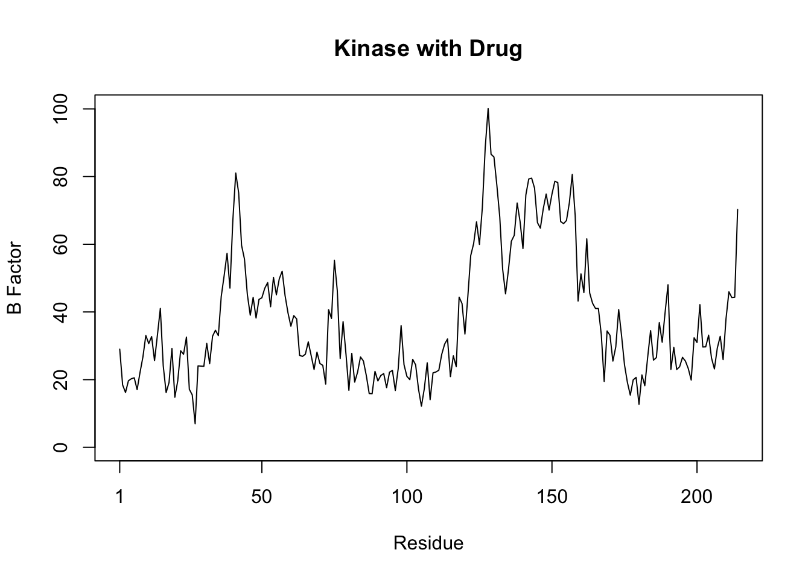

Improve the regular R code by running the code to ensure it is working, simplify the code snippet, remove duplicated steps and transfer the code to a more useful function.
#Creating data frame df <-data.frame(a=1:10, b=seq(200,400,length=10),c=11:20, d=NA)#creating a function to minimize redundancynormalize <-function(x, na.rm =TRUE) {return((x -min(x)) / ((max(x)) -min(x)))}#preserves format + loops df[] <-lapply(df, normalize)df
a b c d
1 0.0000000 0.0000000 0.0000000 NA
2 0.1111111 0.1111111 0.1111111 NA
3 0.2222222 0.2222222 0.2222222 NA
4 0.3333333 0.3333333 0.3333333 NA
5 0.4444444 0.4444444 0.4444444 NA
6 0.5555556 0.5555556 0.5555556 NA
7 0.6666667 0.6666667 0.6666667 NA
8 0.7777778 0.7777778 0.7777778 NA
9 0.8888889 0.8888889 0.8888889 NA
10 1.0000000 1.0000000 1.0000000 NA
#df$d is unecessary due to it being assigned as NA, keeping it in df to display it is NA
Section 1: B
library(bio3d)# Function to plot Bfactorsplotbfactor <-function(trimmed_pdb, pdb_id ="", title =NULL){ b <- trimmed_pdb$atom$bplotb3(b, sse =NULL, type ="l", ylab ="B Factor", main = title)}# Read and trim PDB files in one gos1 <-trim.pdb(read.pdb("4AKE"), chain ="A", elety ="CA")
# Plot calledplotbfactor(s1, "4AKE", title ="Kinase with Drug")

plotbfactor(s2, "1AKE", title ="Kinase without Drug")
plotbfactor(s3, "1E4Y", title ="Kinase with Drug")
Homework problems
Q1. What type of Object is returned from the read.pbd() function?
read.pbd() is a function that is used to load and read three different protein data bank files by accesssing it online. Each file is being assigned to their respective variables s1, s2 and s3 which operates as a list containing data from pbd.
Q2. What does the trim.pbd() function do?
The trim.pbd() function takes s1, s2 and s3 and creates a smaller object with subset of atoms from a larger data set. From each sX, the alpha chain and alpha carbon are specified using chain and elety
Q3. What input parameter would turn off the marginal black and grey rectangles in the plots and what do they represent in this case?
setting sse = NULL would turn off the marginal black and grey rectangles in the plots. They represent the secondary structure returned from the read.pbd such as the beta sheets and alpha helices.
Q4. What would be a better plot to compare across the different proteins?
I believe a lineplot or a boxplot would be better to compare the different proteins. utilizing lineplots would allow you to create separate line plots and panel them for comparison or also overlay them and observe their differences. In addition box plots provide you with the visual tool of analyzing and interperting the distribution of B factors themselves.
Q.5 Which proteins are more similar to eachother in their B-factor trends. How could you quantify this?
Using correlation to compare two proteins such as 4AKE vs 1AKE or 1AKE and 1E4Y vs 1AKE etc would give you a correlation of >, < or == to 1 and determine whether a relationship is established. Observing the cluster Dendrogram, s1.b and s3.b proteins are more similar to eachother in their B-factor trends.
-rbind(): combine by columns or rows - dist(): compute the distances between the rows of a data matrix - hclust(): cluster analysis to show dissimilarities
#take s1.b - s3.b and bind them, compute the distances and cluster them to show dissimilarities. s1.b <- s1$atom$bs2.b <- s2$atom$bs3.b <- s3$atom$bhc <-hclust( dist( rbind(s1.b, s2.b, s3.b) ) )plot(hc)
Creating a new function with recycled code
hc <- hclust( dist( rbind(s1.b, s2.b, s3.b) ) )
plot(hc)
Q.6 How would you generalize the original code above to work with any set of input protein structures.
#Load bio3d library(bio3d)# recycled variables for list creations1.b <- s1$atom$bs2.b <- s2$atom$bs3.b <- s3$atom$b#Create a list of variables protein_list <-list(s1.b,s2.b,s3.b)#Function name, `function` and argument with curly brackets for operating codeprotein_clustering<-function(protein_list){#variable name with row binding of protein list, do.call allows for application of rbind to elements. combined <-do.call(rbind, protein_list)#utilizes dist to calculate distance matrix (based on numerical values) and hclust performs hierarchical clustering. hc is the variable name hc <-hclust(dist(combined))#plots hc = x, main = title name, x lab = proteins, sub = null allows R to set a subtitle if needed. plot(hc, main ="protein structure clustering", xlab ="proteins", sub =NULL)}
#Calling the function and execution protein_clustering(protein_list)
Documentation:
protein_clusteringfunction: aims to utilize the provided code reusing it in order to cluster proteins structural similarities via function. It uses a list of protein data and performs dist + hierarchical clustering. Upon this, a plot (dendrogram) is used to visualize the similarities and differences between the proteins in given list.
Output: The output of the code is a plot comparing 3 proteins based on matrix distances, and heirarchical clustering hclust(). This function allows for this operations to be performed
function inputs: protein_list is a list of matrices where each one represents protein data. The matrices are combined using rbind() and are the argument within the function. Modifying the protein_list can be done by changing the objects within the list, or the creating a new list and changing the list name where applicable.
final notes: Code behaves as desired, plot is the output, code has brief comments to explain purpose, ?x was used to understand some variables such as do.call, organization allows me to visibily understand the code through layers. The function was created to perform the same task as the provided code but utilizing a function and a list to do so.